Em uma frase: PRONTO PARA CONFERIR, com ressalvas. Os três consertos fazem o que prometem, conferido na janela de verdade: gerar o mesmo livro de novo não trava mais; o cartão mostra "pronto, PDF gerado"; e a trava do atalho da Horas 11 não mudou nenhuma imagem (96 de 96 idênticas). Mas os dois bugs que o implementador deduziu existem de verdade (vistos na janela), e o primeiro é grave: "substituir o antigo" e depois "cancelar" apaga o PDF antigo, sem aviso. E apareceu um terceiro, menor: depois de cancelar, o cartão continua verde dizendo "PDF gerado", até fechar e abrir o programa.
Ramo consertos-janela-2026-10-05 (3 commits sobre aab746f: 8081335, 5e68098, 120e46b). Nenhum código foi mexido por mim.
Defeito conhecido (aviso obrigatório até a Fase 1 ficar pronta): moldura dourada e iluminura ainda são defeito conhecido (itens 1.4 e 1.5). Nada destes consertos mexe nisso.
pytest inteiro na worktree, teste_botoes.py, e as 32 páginas-gabarito × 3 filtros comparadas ponto a ponto entre aab746f e 120e46b (cópias limpas do código, feitas com git archive, com a pasta modelos/ copiada nas duas).120e46b), fora da tela (não apareceu para o Samuel), em 1600 × 821 pixels = 1280 × 657 pontos como na rodada de 02/10. Cliques e teclas por mensagens nativas do Windows; menus pelo teclado (setas + Enter); WM_SETFOCUS só na janela de teste. As caixas do Windows "abrir PDF" e "escolher pasta" foram respondidas por arquivo. Pasta de dados própria (LOCALAPPDATA e a pasta do usuário trocadas), nunca a do Samuel.livro-teste.pdf, 4 folhas copiadas das páginas-gabarito do Boécio (p. 3, 7, 8, 22), "Dividir folhas ao meio" desligado, filtro Preto e branco, "Montar cadernos" desligado (o normal do programa).erros.log da pasta de teste.| O quê | Resultado |
|---|---|
pytest tests -q na worktree, com EDITOR_IMPRESSAO_GABARITO |
1301 passaram, 87 pularam, 0 falhas (8 min 8 s, PC ocupado) |
Os que pularam, rodados de novo numa cópia limpa com o gabarito e saida_teste ligados (só leitura) |
273 passaram, 7 pularam, 0 falhas |
teste_botoes.py |
132 ações, 0 falhas (inclui "salvar como (2)") |
32 páginas-gabarito × 3 filtros, aab746f × 120e46b |
96 de 96 idênticas, ponto a ponto |
Por que pularam os 87 na worktree:
test_camadas, test_gravura_scantailor, test_medidor_nas_paginas_otsu): "pasta gabarito/ ausente". Esses testes procuram o gabarito dentro da pasta do código e não leem a variável EDITOR_IMPRESSAO_GABARITO (só o teste novo da Horas 11 lê). Rodados de novo com o gabarito ligado: passaram.saida_teste/ocr-1.3 e saida_teste/ocr-comparar ficam fora do git. Rodados de novo com saida_teste ligado: passaram.OCR_22=1 (~5 min, de propósito).test_horas_11_de_verdade_continua_no_atalho rodou e passou (a variável do gabarito funcionou para ele).8081335): gerar o mesmo livro de novo — funciona (olho, na janela)livro-teste - preto e branco.pdf, 4 páginas).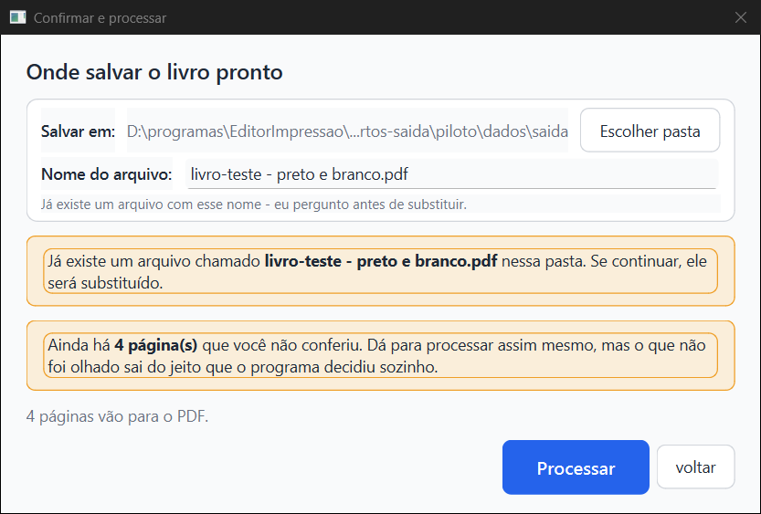
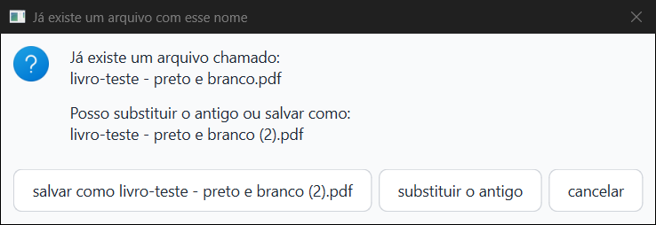
ebd46667… e mesma data, 13:47:32). Abri a página 1 do (2): é a capa do Boécio, filtrada.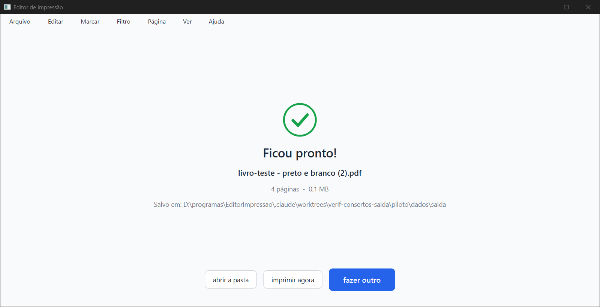
meu-livro-teste.pdf e dei OK. "Confirmar e processar" abriu com esse nome, na mesma pasta, sem faixa "Já existe" (o arquivo não existia). Processei e o meu-livro-teste.pdf foi gerado.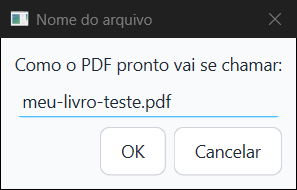
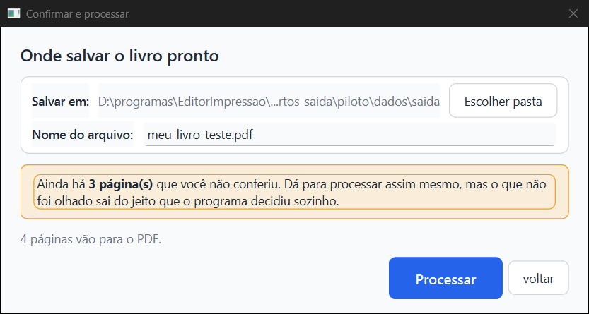
pendrive, fechei o programa e apaguei a pasta. Ao reabrir, "Confirmar e processar" veio com a pasta sugerida (…\home\Editor de Impressão), o nome guardado e "Processar" aceso, e a pasta pendrive não foi recriada (conferido no disco).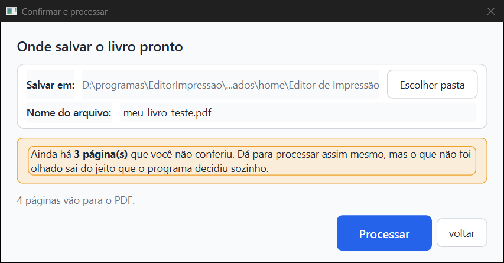
5e68098): cartão "pronto, PDF gerado" — funciona (olho, na janela), com um buraco (ver bug 3)Depois de gerar o PDF e clicar "fazer outro", o cartão ficou com a barra verde cheia, "pronto, PDF gerado" e o botão "abrir a pasta". Continuou assim depois de fechar e abrir o programa. No disco, resumo.json com "pdf_gerado": true. Não cliquei "abrir a pasta" (abriria o Explorer na tela do Samuel); o teste_botoes.py clica nele por máquina.
120e46b): trava do atalho da Horas 11 — nenhuma imagem mudou (máquina)aab746f (32 páginas-gabarito × Preto e branco, Mágico pro, Melhorar).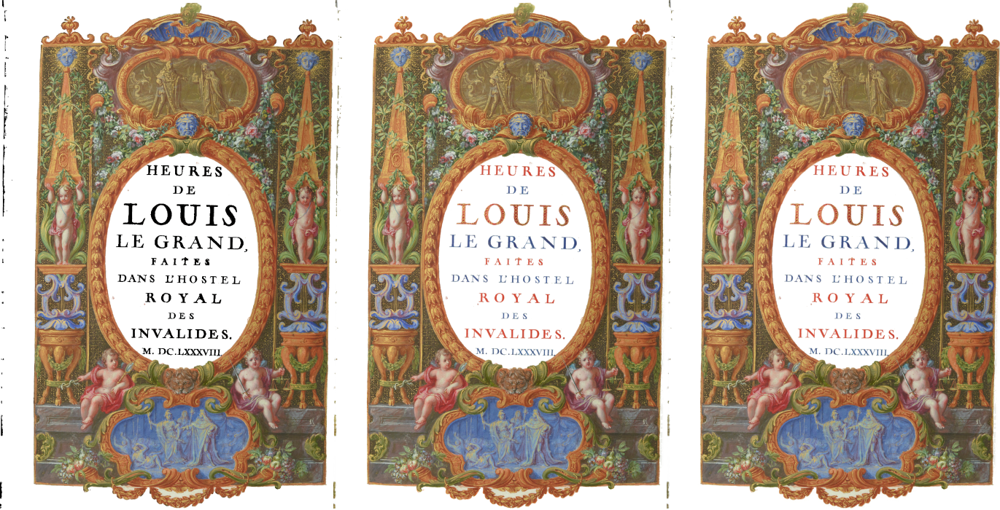
Como testei: com meu-livro-teste.pdf gerado (1,1 MB), reabri o livro, "Confirmar e processar" > "Processar" > "substituir o antigo" e, logo em seguida, "cancelar" na tela de progresso. Resultado: o programa voltou para a tela Conferir sem nenhuma mensagem, e o meu-livro-teste.pdf sumiu do disco. O Kaique perde o PDF que já tinha, e não fica sabendo.
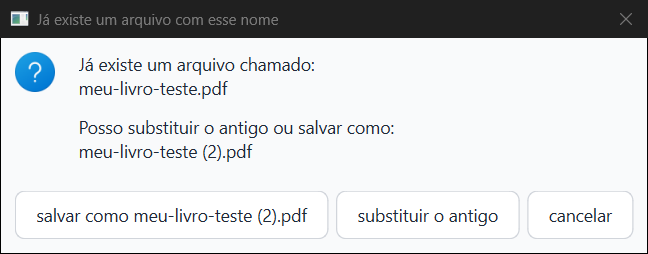

Por que acontece (leitura do código, core/pipeline.py): sem "Montar cadernos" (o normal), o PDF é gravado direto no lugar do arquivo final (l. 1038, destino = saida_final). Ao cancelar, o EscritorPDF grava por cima o que já tinha (__exit__ → fechar → save), e depois o tratamento do cancelamento apaga o destino (l. 1133–1137, Path(destino).unlink(missing_ok=True)). Mesmo cancelando antes da primeira página, o unlink apaga o antigo. Com "Montar cadernos" ligado o antigo escapa, porque aí se grava num arquivo temporário e só no fim no lugar certo.
É antigo (não foi criado por estes commits), mas o conserto 1 deixa o caminho mais comum: agora reabrir o livro leva direto à caixa "substituir / salvar como". Fica a sugestão para quem consertar: gravar sempre num arquivo temporário ao lado e só trocar pelo final quando terminar bem (como já se faz com os cadernos).
Como testei: com o PDF gerado, reabri o livro, troquei o filtro da página 1 para Melhorar (menu Filtro), voltei ao início sem processar. O cartão continuou verde, "pronto, PDF gerado"; no disco, pdf_gerado: true e conferidas: 1. O PDF não tem mais a página 1 como ela está no trabalho.
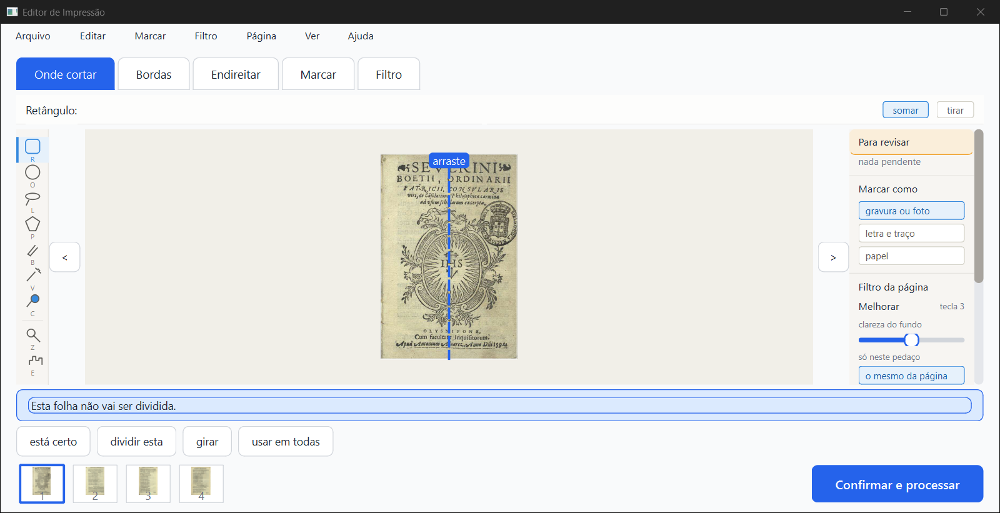

Nada põe pdf_gerado em falso quando o trabalho muda (só ao começar a processar e no "começar de novo"). É menos grave que o bug 1, e é uma decisão de como o cartão deve falar ("pronto" × "mudou depois do PDF").
No teste do bug 1, depois de cancelar fui ao início por Arquivo > "Voltar para as opções" > "voltar". O disco e a memória do programa já diziam pdf_gerado: false, mas o cartão ainda mostrava "pronto, PDF gerado" e "abrir a pasta", para um PDF que não existe mais. Só ficou certo ("1 de 4 conferidas", "continuar") depois de fechar e abrir o programa.
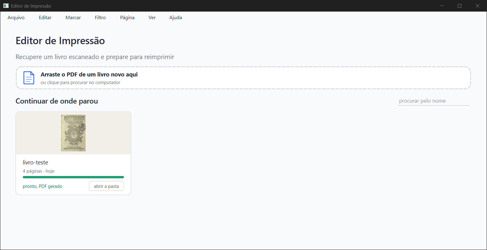
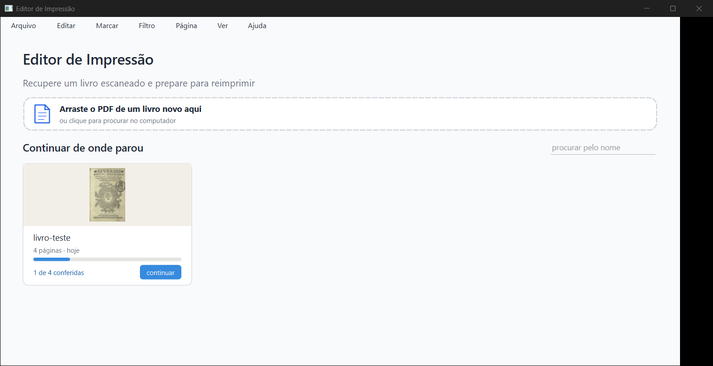
Por que: o botão "voltar" da tela "O que fazer" vai para o início sem recarregar os cartões (ui/janela_principal.py l. 132, setCurrentIndex(INICIO) sem tela_inicio.recarregar()). O processar põe pdf_gerado em falso, mas o cartão na tela é o de antes. Antigo (a contagem "X de Y conferidas" também fica velha nesse caminho), mas agora aparece como uma promessa errada em verde.
teste_velocidade.py, ~12 min, só com o PC parado) não foi rodado: o PC estava com outros dois agentes. Os tempos acima são indicação.EDITOR_IMPRESSAO_GABARITO: numa worktree eles pulam sem avisar. Rodados por mim numa cópia com o gabarito ligado: passaram.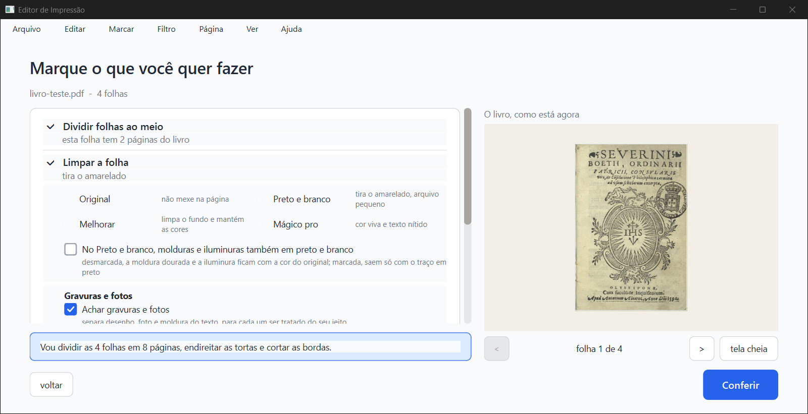
| O que mostra | |
|---|---|
| 01b-inicio-vazia | Tela inicial vazia, 1600 × 821 |
| 02-o-que-fazer | Opções do livro de teste (Preto e branco escolhido depois) |
| 03-conferir | Conferir, página 1, "Confirmar e processar" |
| 04-confirmar-primeira-vez | Primeira vez: pasta escolhida, nome sugerido, Processar aceso |
| 05-pronto | "Ficou pronto!", 4 páginas, 0,1 MB |
| 06-inicio-cartao-pdf-gerado | Cartão verde, "pronto, PDF gerado", "abrir a pasta" |
| 07-inicio-sessao-nova | O mesmo cartão depois de fechar e abrir |
| 08-confirmar-gerar-de-novo | Mesma pasta e nome, Processar aceso, faixa "Já existe" |
| 09-caixa-substituir-ou-salvar-como | substituir / salvar como (2) / cancelar |
| 10-pronto-salvar-como-2 | "Ficou pronto!" com o (2) |
| 11-pdf-2-pagina-1 | Página 1 do (2), capa do Boécio filtrada |
| 12-conferir-pagina-1-trocada-para-melhorar | Filtro da página 1 = Melhorar |
| 13-inicio-depois-de-mudar-sem-gerar | Cartão ainda "pronto, PDF gerado" (bug 2) |
| 14-menu-nome-do-arquivo | Caixa "Nome do arquivo" com meu-livro-teste.pdf |
| 15-confirmar-com-o-nome-do-menu | Confirmar com meu-livro-teste.pdf |
| 16-caixa-antes-de-substituir | Caixa para meu-livro-teste.pdf (escolhido "substituir") |
| 17-depois-de-cancelar | Volta para Conferir sem aviso; PDF antigo apagado (bug 1) |
| 18-inicio-depois-de-cancelar | Cartão ainda verde (bug 3) |
| 19-inicio-sessao-nova-depois-de-cancelar | Depois de reabrir: "1 de 4 conferidas", "continuar" |
| 20-confirmar-pasta-do-pdf-sumiu | Pasta sumida: volta à sugerida, nome guardado, Processar aceso |
| horas11-agora-3-filtros | Horas 11 nos 3 filtros (idêntica ao antes) |
core/pipeline.py l. 1038 e 1133–1137. Prints 16 e 17.ui/janela_principal.py l. 132 não recarrega os cartões). Prints 18 e 19.test_camadas, test_gravura_scantailor e test_medidor_nas_paginas_otsu não leem EDITOR_IMPRESSAO_GABARITO e pulam calados em worktree.relatorios/conferir/consertos-janela-2026-10-05/verificador/parecer-verificador-consertos-janela.html (e .md, .pdf), na worktree consertos.prints/ ao lado (2,4 MB, no git). O .pdf tem 26 MB (as imagens entram sem compressão) e fica fora do git, só nesta pasta.passo.py e lancador.py (piloto da janela, a partir dos de 02/10), montar_livro.py, rodar_tudo.sh e comparar.py (a comparação usa o rodar_verificador.py de 02/10).D:\programas\EditorImpressao\.claude\worktrees\verif-consertos-saida\ (fora do git; pode ser apagada).Editor de Impressão · gerado em 05/10/2026 às 14:23